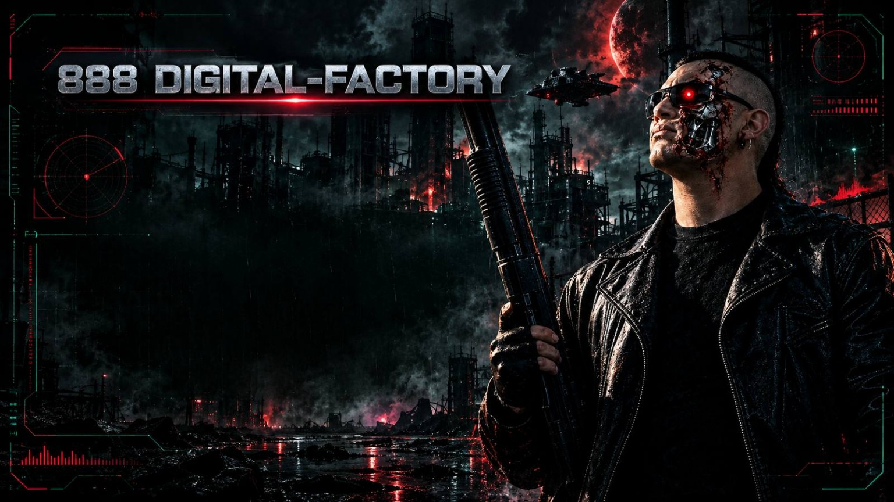

888 DIGITAL FACTORY TERMINAL 08.88
INDUSTRIAS
OLVIDADAS
SEÑALES SONORAS RECUPERADAS DEL FIN DE LA CIVILIZACIÓN.
▶ INICIAR TRANSMISIÓNSCAN // 88.8 MHz
OBJETO DETECTADONEURA SYSTEMS
COORDENADAS: 33° S / ZONA INDUSTRIALSEÑAL: ESTABLEPROTOCOLO: AUDIO-2050

NEURA
ARCHIVE 08
ARCHIVE 08
CLASSIFIED
/// TRANSMISIÓN ACTIVA EN ESPERA
INDUSTRIAS OLVIDADAS
NEURA // 888 DIGITAL FACTORY
Entre ruinas y concreto…
las máquinas aún recuerdan.
La humanidad fue un error.
Las industrias, un sueño olvidado.
00:0000:00
ANALIZADOR DE AUDIOFFT / LIVE SPECTRUM
20 HzLOW FREQUENCYHIGH FREQUENCY20 kHz
VOL